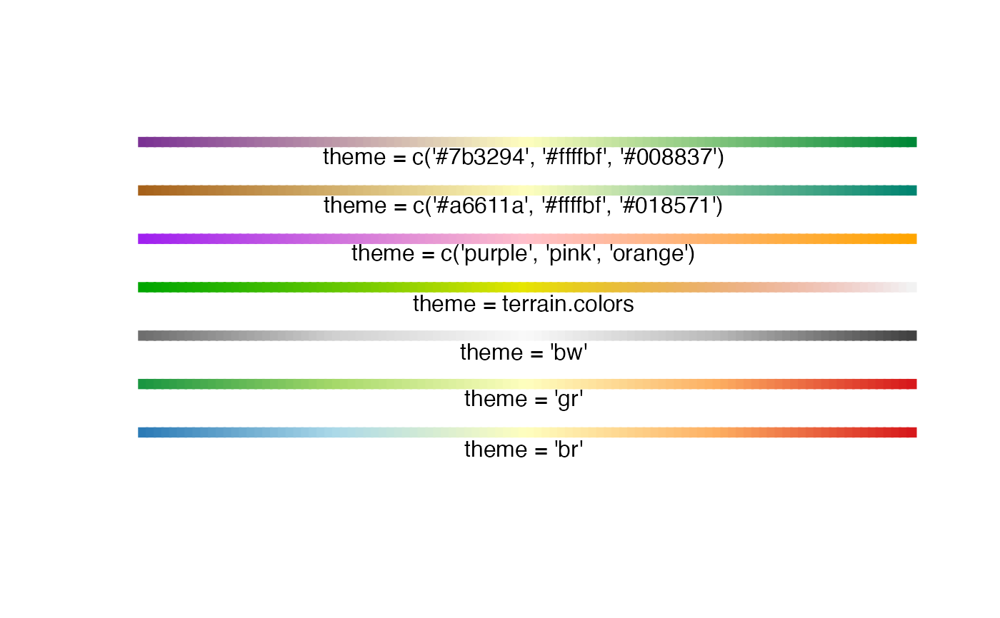
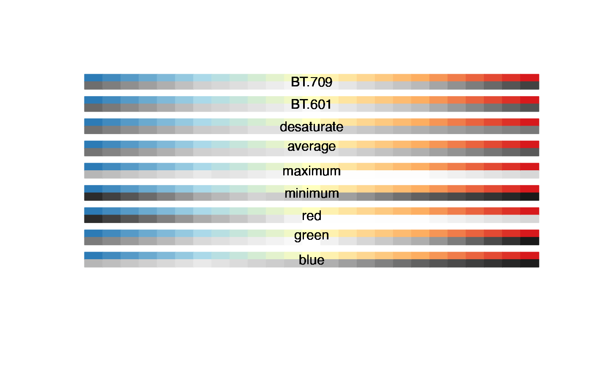

Color Palettes for the opticut Package
occolors.RdA convenient way of setting color palettes for the opticut package.
Arguments
- theme
character value, character vector, or a function used to interpolate the colors. The built-in values are
"br"(default, blue-red divergent palette, colorblind safe),"gr"(green-red divergent palette),"bw"(black and white: grayscale converted"br"settings). SeecolorRampPalette,grayand the Examples.- col
vector of color specification as described on the help page for the
col2rgbfunction. This is converted to grayscale.- method
character, the method used for grayscale conversion. See Details.
Details
Grayscale conversion methods in col2gray calculate gray levels based on
red (R), green (G), and blue (B) color channels as follows:
"BT.709"0.2126 * R + 0.7152 * G + 0.0722 * B, luminosity correction following the ITU-R BT.709 recommendation;
"BT.601"0.299 * R + 0.587 * G + 0.114 * B, luminosity correction following the ITU-R BT.601 recommendation;
"desaturate"(max(R, G, B) + min(R, G, B)) / 2, also called lightness;
"average"(R + G + B) / 3;
"maximum"max(R, G, B);
"minimum"min(R, G, B);
"red"R;
"green"G;
"blue"B.
Value
occolors returns a function, see colorRampPalette.
col2gray returns a vector of gray colors based on
the conversion method and gray.
Author
Peter Solymos <psolymos@gmail.com>
Hexadecimal values for the built-in palettes are taken from https://colorbrewer2.org/.
Converting color to grayscale: https://en.wikipedia.org/wiki/Grayscale
See also
colorRampPalette for a general description of palettes.
ocoptions for setting the color theme option in the
opticut package.
Examples
## using palettes
plot(1:100, rep(2, 100), pch = 15,
ylim = c(0, 21), axes = FALSE, ann = FALSE,
col = occolors()(100)) # default 'bg'
text(50, 1, "theme = 'br'")
points(1:100, rep(5, 100), pch = 15,
col=occolors("gr")(100))
text(50, 4, "theme = 'gr'")
points(1:100, rep(8, 100), pch = 15,
col=occolors("bw")(100))
text(50, 7, "theme = 'bw'")
points(1:100, rep(11, 100), pch = 15,
col=occolors(terrain.colors)(100))
text(50, 10, "theme = terrain.colors")
points(1:100, rep(14, 100), pch = 15,
col=occolors(c("purple", "pink", "orange"))(100))
text(50, 13, "theme = c('purple', 'pink', 'orange')")
points(1:100, rep(17, 100), pch = 15,
col=occolors(c("#a6611a", "#ffffbf", "#018571"))(100))
text(50, 16, "theme = c('#a6611a', '#ffffbf', '#018571')")
points(1:100, rep(20, 100), pch = 15,
col=occolors(c("#7b3294", "#ffffbf", "#008837"))(100))
text(50, 19, "theme = c('#7b3294', '#ffffbf', '#008837')")

## grayscale conversions
n <- 25
col <- occolors("br")(n)
method <- c("BT.709", "BT.601",
"desaturate", "average", "maximum", "minimum",
"red", "green", "blue")
plot(0, type="n", ann=FALSE, axes=FALSE,
xlim=c(0, n), ylim=c(3*length(method), 0))
for (j in 1:length(method)) {
for (i in 1:n) {
polygon(c(i-1, i, i, i-1), c(0, 0, 1, 1)+((j-1)*3),
col=col[i], border=col[i])
polygon(c(i-1, i, i, i-1), c(1, 1, 2, 2)+((j-1)*3),
col=col2gray(col[i], method=method[j]),
border=col2gray(col[i], method=method[j]))
text(n/2, 1+((j-1)*3), method[j])
}
}
